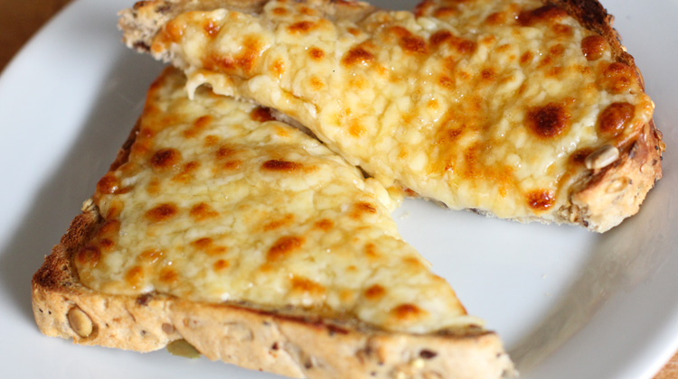

Cheese on toast

Description
The classic english meal, a bit of cheese on a bit of toast
If you're feeling fancy you can even put tomatoes on top!
Ingredients
- 2 slices of bread
- 250g Mature cheddar cheese
Steps
- place bread under grill and begin lightly toasting
- slice the cheese up into 6 slices
- Once the bread is toasted enough add three slices to each piece and place back under the grill
- cook until cheese is lightly browned